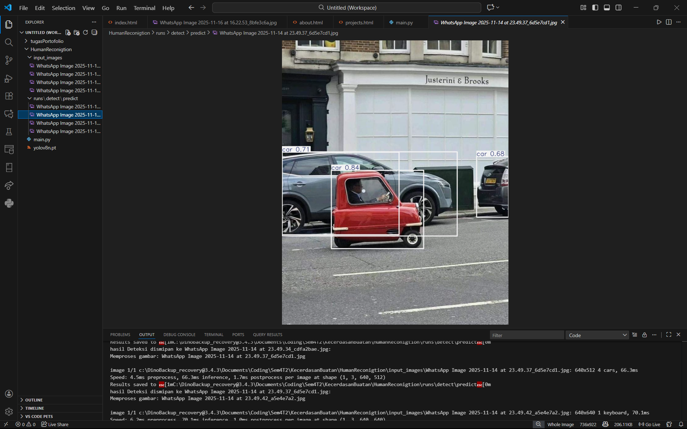

Membuat aplikasi warung makan berbasis web menggunakan HTML, CSS, dan JavaScript untuk memudahkan pemesanan dan pengelolaan menu.
Saya membuat semua ini sendiri dan kesulitan dalam membuat Web ini yaitu sulit untuk mengdesign website yang baik dan modern
Lihat ProjekWebsite PetShop berbasis web menggunakan HTML, CSS, dan JavaScript namun belum bisa melakukan pemesanan.
Saya mendapat bagian mengerjakan bagian Beranda dan juga FAQ
Tantangan dalam membuat website ini adalah memastikan tampilan yang responsif dan user-friendly. Serta sulit untuk menentukan tema yang bagus agar tampak seperti website yang modern
Lihat ProjekProgram ini menggunakan YOLOv8 untuk mengenali objek dalam gambar yang telah disiapkan dengan akurasi tinggi.
Kami mengerjakan nya bersama, cukup mudah karena kami mengikuti tutorial di YouTube.
Kesulitannya ada pada saat typo pada variable sehingga program tidak dapat dijalankan
